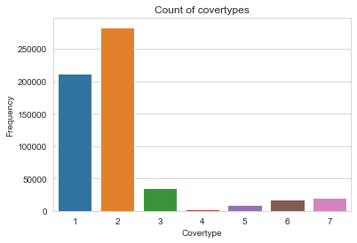

Balanceo del dataset#
import warnings
warnings.filterwarnings('ignore')
import time
import tensorflow as tf
import pandas as pd
import numpy as np
import seaborn as sns
import matplotlib.pyplot as plt
from ucimlrepo import fetch_ucirepo
---------------------------------------------------------------------------
ModuleNotFoundError Traceback (most recent call last)
Cell In[2], line 2
1 import time
----> 2 import tensorflow as tf
3 import pandas as pd
4 import numpy as np
ModuleNotFoundError: No module named 'tensorflow'
covertype = fetch_ucirepo(id=31)
X = covertype.data.features
y = covertype.data.targets
X.drop(["Hillshade_9am"], axis=1, inplace=True)
#Tabla de frecuencias de los covertypes
sns.set_style("whitegrid")
plt.title('Count of covertypes')
sns.countplot(x = y.Cover_Type)
plt.xlabel('Covertype')
plt.ylabel('Frequency')
plt.show()

A la luz del desbalanceo que tenemos en el covertype, donde los covertype 1 y 2 tienen una frecuencia mucho mas alta que las otras clases, vamos a aplicar metodos de balanceo para poder trabajar nuestros modelos de Machine Learning
from sklearn.model_selection import train_test_split
from sklearn.metrics import classification_report
# Dividir datos
X_train, X_test, y_train, y_test = train_test_split(X, y, test_size=0.2, random_state=42)
y_train.value_counts()
Cover_Type
2 226801
1 169283
3 28633
7 16495
6 13878
5 7498
4 2221
dtype: int64
Técnica de sobremuestreo sintético de minorías(SMOTE)#
La técnica de sobremuestreo sintético de minorías (SMOTE) es un potente método utilizado para tratar el desequilibrio de clases en los conjuntos de datos. SMOTE resuelve este problema generando muestras de clases minoritarias para equilibrar la distribución de clases. SMOTE funciona generando ejemplos sintéticos en el espacio de características de la clase minoritaria. Procedimiento de trabajo de SMOTE:
Identificación de ejemplos de clases minoritarias: SMOTE funciona en conjuntos de datos en los que una o más clases están significativamente infrarrepresentadas en comparación con otras. El primer paso consiste en identificar la clase o clases minoritarias en el conjunto de datos.
Selección del vecino más próximo: Para cada clase minoritaria, SMOTE identifica sus k vecinos más cercanos en el espacio de características. El número de vecinos más próximos, denominado k, es un parámetro especificado por el usuario.
Generación de muestras sintéticas: Para cada instancia de clase minoritaria, SMOTE selecciona aleatoriamente uno de sus k vecinos más cercanos. A continuación, genera muestras sintéticas a lo largo del segmento de línea que une el caso de clase minoritaria y el vecino más próximo seleccionado en el espacio de características.
Sobremuestreo controlado: La cantidad de sobremuestreo se controla mediante un parámetro denominado proporción de sobremuestreo, que especifica la proporción deseada de muestras sintéticas con respecto a las muestras reales de la clase minoritaria. Por defecto, SMOTE intenta equilibrar la distribución de clases generando muestras sintéticas hasta que la clase minoritaria alcanza el mismo tamaño que la clase mayoritaria.
Repetir para todos los casos de clases minoritarias: Los pasos 2-4 se repiten para todas las instancias de clase minoritaria en el conjunto de datos, generando muestras sintéticas para aumentar la clase minoritaria.
Crear conjunto de datos equilibrado: Tras generar muestras sintéticas para la clase minoritaria, el conjunto de datos resultante es más equilibrado, con una distribución más equitativa de los casos entre las clases.
from imblearn.over_sampling import SMOTE
# Aplicar SMOTE
smote = SMOTE(random_state=42)
X_train_res, y_train_res = smote.fit_resample(X_train, y_train)
y_train_res.value_counts()
Cover_Type
1 226801
2 226801
3 226801
4 226801
5 226801
6 226801
7 226801
dtype: int64
#Guardamos los datos en un csv por conveniencia a usos mas adelante
resampled_df = pd.DataFrame(X_train_res, columns=X_train.columns)
resampled_df['Cover_Type'] = y_train_res
resampled_df.to_csv('datos_smote.csv', index=False)
ADASYN: método de muestreo sintético adaptativo#
ADASYN, una extensión de la técnica SMOTE, también se utiliza para tratar conjuntos de datos desequilibrados. ADASYN se centra en las densidades locales de las clases minoritarias. Averigua las regiones en las que el desequilibrio es muy grave y aplica la estrategia para generar muestras sintéticas en ellas. Genera más muestras donde la densidad es alta y menos muestras donde la densidad es baja. Este enfoque es muy útil en situaciones en las que la distribución de clases varía en el espacio de características. Procedimiento de trabajo de ADASYN
Ratios de desequilibrio de clases: El paso inicial de ADASYN es calcular el ratio de clase minoritaria que se obtiene dividiendo el número de muestras de clase mayoritaria por el número de muestras de clase minoritaria.
Hallar la distribución de densidad: Para cada instancia minoritaria, encontramos sus k vecinos más cercanos. A continuación, hallamos la distancia entre ellos utilizando métricas como la distancia Manhattan o la distancia euclidiana. Si las instancias están rodeadas por más vecinos cercanos, consideramos que la densidad es más alta; de lo contrario, la densidad se considera baja.
Ratio de generación de muestras: Una vez calculados el ratio de desequilibrio de clases y la distribución de la densidad, calculamos el ratio de generación de muestras. Averigua cuántas muestras deben generarse para cada caso de clase minoritaria. Para densidades más altas e instancias desequilibradas más grandes, se generan más muestras sintéticas.
Generación de muestras sintéticas: Combinando las instancias minoritarias con sus vecinos más cercanos, se generan nuevas muestras.
Creación de conjuntos de datos equilibrados: Al combinar las nuevas muestras sintéticas con las instancias minoritarias originales, aumenta la frecuencia de las clases minoritarias. Esto equilibra el conjunto de datos y ayuda al modelo a aprender con mayor precisión.
from imblearn.over_sampling import ADASYN
adasyn = ADASYN(random_state = 42, n_jobs = -1)
X_train_ADA, y_train_ADA = adasyn.fit_resample(X_train, y_train)
y_train_ADA.value_counts()
Cover_Type
6 227478
3 226993
2 226801
4 226650
5 226582
7 226395
1 226367
dtype: int64
#Guardamos los datos en un csv por conveniencia a usos mas adelante
resampled_df = pd.DataFrame(X_train_ADA, columns=X_train.columns)
resampled_df['Cover_Type'] = y_train_ADA
resampled_df.to_csv('datos_ada.csv', index=False)
Train weight = balanced#
Para lidiar con base de datos desbalanceados, la libreria de sklearn viene con un parametro integrado a los modelos llamado ‘train_weight’ el cual se encarga de asignar pesos a las clases en el datos. Al asignar un peso mayor a la clase minoritaria y un peso menor a la clase mayoritaria, se obliga al modelo a prestar más atención a la clase minoritaria durante el entrenamiento. El parametro puede recibir varios valores, pero nosotros usaremos el valor ‘balanced’ el cual explicaremos a continuacion como funciona
train_weight = ‘balanced’: El peso_clase se ajusta automáticamente de forma inversamente proporcional a las frecuencias de clase en los datos de entrada. La fórmula utilizada es: \(w_j=\frac{n\text{samples}}{n\text{classes}\cdot nj}\) donde \(w_j\) es el peso de la clase j, nsamples es el número total de muestras, nclasses es el número de clases y \(n_j\) es el número de muestras de la clase j.